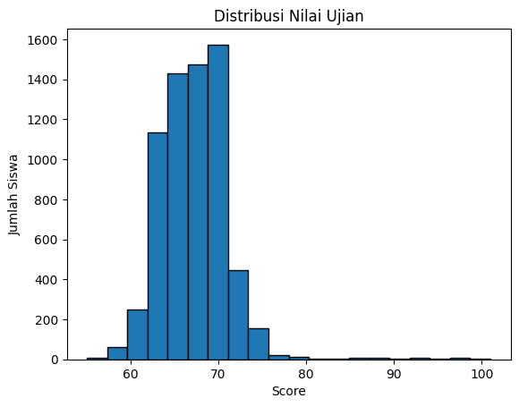
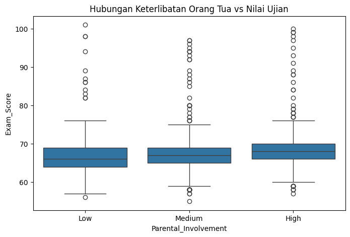
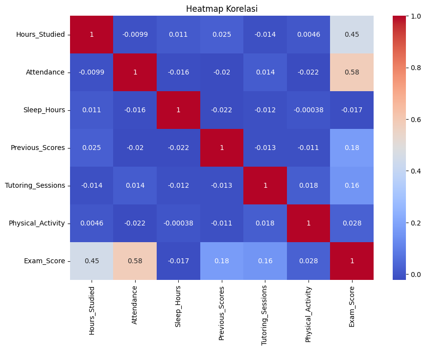

Data Exploration#
1. Import Dataset dari KaggleHub#
%pip install kagglehub[pandas-datasets]
# Import library
import kagglehub
from kagglehub import KaggleDatasetAdapter
import pandas as pd
# Load dataset dari Kaggle
df = kagglehub.load_dataset(
KaggleDatasetAdapter.PANDAS,
"lainguyn123/student-performance-factors",
"StudentPerformanceFactors.csv"
)
# Lihat 5 baris pertama
df.head()
Requirement already satisfied: kagglehub[pandas-datasets] in /usr/local/python/3.12.1/lib/python3.12/site-packages (0.3.13)
Requirement already satisfied: packaging in /home/codespace/.local/lib/python3.12/site-packages (from kagglehub[pandas-datasets]) (25.0)
Requirement already satisfied: pyyaml in /home/codespace/.local/lib/python3.12/site-packages (from kagglehub[pandas-datasets]) (6.0.2)
Requirement already satisfied: requests in /home/codespace/.local/lib/python3.12/site-packages (from kagglehub[pandas-datasets]) (2.32.4)
Requirement already satisfied: tqdm in /usr/local/python/3.12.1/lib/python3.12/site-packages (from kagglehub[pandas-datasets]) (4.67.1)
Requirement already satisfied: pandas in /home/codespace/.local/lib/python3.12/site-packages (from kagglehub[pandas-datasets]) (2.3.1)
Requirement already satisfied: numpy>=1.26.0 in /home/codespace/.local/lib/python3.12/site-packages (from pandas->kagglehub[pandas-datasets]) (2.3.1)
Requirement already satisfied: python-dateutil>=2.8.2 in /home/codespace/.local/lib/python3.12/site-packages (from pandas->kagglehub[pandas-datasets]) (2.9.0.post0)
Requirement already satisfied: pytz>=2020.1 in /home/codespace/.local/lib/python3.12/site-packages (from pandas->kagglehub[pandas-datasets]) (2025.2)
Requirement already satisfied: tzdata>=2022.7 in /home/codespace/.local/lib/python3.12/site-packages (from pandas->kagglehub[pandas-datasets]) (2025.2)
Requirement already satisfied: six>=1.5 in /home/codespace/.local/lib/python3.12/site-packages (from python-dateutil>=2.8.2->pandas->kagglehub[pandas-datasets]) (1.17.0)
Requirement already satisfied: charset_normalizer<4,>=2 in /home/codespace/.local/lib/python3.12/site-packages (from requests->kagglehub[pandas-datasets]) (3.4.2)
Requirement already satisfied: idna<4,>=2.5 in /home/codespace/.local/lib/python3.12/site-packages (from requests->kagglehub[pandas-datasets]) (3.10)
Requirement already satisfied: urllib3<3,>=1.21.1 in /home/codespace/.local/lib/python3.12/site-packages (from requests->kagglehub[pandas-datasets]) (2.5.0)
Requirement already satisfied: certifi>=2017.4.17 in /home/codespace/.local/lib/python3.12/site-packages (from requests->kagglehub[pandas-datasets]) (2025.7.9)
[notice] A new release of pip is available: 25.1.1 -> 25.2
[notice] To update, run: python3 -m pip install --upgrade pip
Note: you may need to restart the kernel to use updated packages.
/usr/local/python/3.12.1/lib/python3.12/site-packages/tqdm/auto.py:21: TqdmWarning: IProgress not found. Please update jupyter and ipywidgets. See https://ipywidgets.readthedocs.io/en/stable/user_install.html
from .autonotebook import tqdm as notebook_tqdm
/tmp/ipykernel_35113/214524819.py:9: DeprecationWarning: Use dataset_load() instead of load_dataset(). load_dataset() will be removed in a future version.
df = kagglehub.load_dataset(
| Hours_Studied | Attendance | Parental_Involvement | Access_to_Resources | Extracurricular_Activities | Sleep_Hours | Previous_Scores | Motivation_Level | Internet_Access | Tutoring_Sessions | Family_Income | Teacher_Quality | School_Type | Peer_Influence | Physical_Activity | Learning_Disabilities | Parental_Education_Level | Distance_from_Home | Gender | Exam_Score | |
|---|---|---|---|---|---|---|---|---|---|---|---|---|---|---|---|---|---|---|---|---|
| 0 | 23 | 84 | Low | High | No | 7 | 73 | Low | Yes | 0 | Low | Medium | Public | Positive | 3 | No | High School | Near | Male | 67 |
| 1 | 19 | 64 | Low | Medium | No | 8 | 59 | Low | Yes | 2 | Medium | Medium | Public | Negative | 4 | No | College | Moderate | Female | 61 |
| 2 | 24 | 98 | Medium | Medium | Yes | 7 | 91 | Medium | Yes | 2 | Medium | Medium | Public | Neutral | 4 | No | Postgraduate | Near | Male | 74 |
| 3 | 29 | 89 | Low | Medium | Yes | 8 | 98 | Medium | Yes | 1 | Medium | Medium | Public | Negative | 4 | No | High School | Moderate | Male | 71 |
| 4 | 19 | 92 | Medium | Medium | Yes | 6 | 65 | Medium | Yes | 3 | Medium | High | Public | Neutral | 4 | No | College | Near | Female | 70 |
# Info umum
df.info()
# Statistik deskriptif
df.describe(include="all")
<class 'pandas.core.frame.DataFrame'>
RangeIndex: 6607 entries, 0 to 6606
Data columns (total 20 columns):
# Column Non-Null Count Dtype
--- ------ -------------- -----
0 Hours_Studied 6607 non-null int64
1 Attendance 6607 non-null int64
2 Parental_Involvement 6607 non-null object
3 Access_to_Resources 6607 non-null object
4 Extracurricular_Activities 6607 non-null object
5 Sleep_Hours 6607 non-null int64
6 Previous_Scores 6607 non-null int64
7 Motivation_Level 6607 non-null object
8 Internet_Access 6607 non-null object
9 Tutoring_Sessions 6607 non-null int64
10 Family_Income 6607 non-null object
11 Teacher_Quality 6529 non-null object
12 School_Type 6607 non-null object
13 Peer_Influence 6607 non-null object
14 Physical_Activity 6607 non-null int64
15 Learning_Disabilities 6607 non-null object
16 Parental_Education_Level 6517 non-null object
17 Distance_from_Home 6540 non-null object
18 Gender 6607 non-null object
19 Exam_Score 6607 non-null int64
dtypes: int64(7), object(13)
memory usage: 1.0+ MB
| Hours_Studied | Attendance | Parental_Involvement | Access_to_Resources | Extracurricular_Activities | Sleep_Hours | Previous_Scores | Motivation_Level | Internet_Access | Tutoring_Sessions | Family_Income | Teacher_Quality | School_Type | Peer_Influence | Physical_Activity | Learning_Disabilities | Parental_Education_Level | Distance_from_Home | Gender | Exam_Score | |
|---|---|---|---|---|---|---|---|---|---|---|---|---|---|---|---|---|---|---|---|---|
| count | 6607.000000 | 6607.000000 | 6607 | 6607 | 6607 | 6607.00000 | 6607.000000 | 6607 | 6607 | 6607.000000 | 6607 | 6529 | 6607 | 6607 | 6607.000000 | 6607 | 6517 | 6540 | 6607 | 6607.000000 |
| unique | NaN | NaN | 3 | 3 | 2 | NaN | NaN | 3 | 2 | NaN | 3 | 3 | 2 | 3 | NaN | 2 | 3 | 3 | 2 | NaN |
| top | NaN | NaN | Medium | Medium | Yes | NaN | NaN | Medium | Yes | NaN | Low | Medium | Public | Positive | NaN | No | High School | Near | Male | NaN |
| freq | NaN | NaN | 3362 | 3319 | 3938 | NaN | NaN | 3351 | 6108 | NaN | 2672 | 3925 | 4598 | 2638 | NaN | 5912 | 3223 | 3884 | 3814 | NaN |
| mean | 19.975329 | 79.977448 | NaN | NaN | NaN | 7.02906 | 75.070531 | NaN | NaN | 1.493719 | NaN | NaN | NaN | NaN | 2.967610 | NaN | NaN | NaN | NaN | 67.235659 |
| std | 5.990594 | 11.547475 | NaN | NaN | NaN | 1.46812 | 14.399784 | NaN | NaN | 1.230570 | NaN | NaN | NaN | NaN | 1.031231 | NaN | NaN | NaN | NaN | 3.890456 |
| min | 1.000000 | 60.000000 | NaN | NaN | NaN | 4.00000 | 50.000000 | NaN | NaN | 0.000000 | NaN | NaN | NaN | NaN | 0.000000 | NaN | NaN | NaN | NaN | 55.000000 |
| 25% | 16.000000 | 70.000000 | NaN | NaN | NaN | 6.00000 | 63.000000 | NaN | NaN | 1.000000 | NaN | NaN | NaN | NaN | 2.000000 | NaN | NaN | NaN | NaN | 65.000000 |
| 50% | 20.000000 | 80.000000 | NaN | NaN | NaN | 7.00000 | 75.000000 | NaN | NaN | 1.000000 | NaN | NaN | NaN | NaN | 3.000000 | NaN | NaN | NaN | NaN | 67.000000 |
| 75% | 24.000000 | 90.000000 | NaN | NaN | NaN | 8.00000 | 88.000000 | NaN | NaN | 2.000000 | NaN | NaN | NaN | NaN | 4.000000 | NaN | NaN | NaN | NaN | 69.000000 |
| max | 44.000000 | 100.000000 | NaN | NaN | NaN | 10.00000 | 100.000000 | NaN | NaN | 8.000000 | NaN | NaN | NaN | NaN | 6.000000 | NaN | NaN | NaN | NaN | 101.000000 |
df.isnull().sum()
Hours_Studied 0
Attendance 0
Parental_Involvement 0
Access_to_Resources 0
Extracurricular_Activities 0
Sleep_Hours 0
Previous_Scores 0
Motivation_Level 0
Internet_Access 0
Tutoring_Sessions 0
Family_Income 0
Teacher_Quality 78
School_Type 0
Peer_Influence 0
Physical_Activity 0
Learning_Disabilities 0
Parental_Education_Level 90
Distance_from_Home 67
Gender 0
Exam_Score 0
dtype: int64
import matplotlib.pyplot as plt
plt.hist(df["Exam_Score"], bins=20, edgecolor="black")
plt.title("Distribusi Nilai Ujian")
plt.xlabel("Score")
plt.ylabel("Jumlah Siswa")
plt.show()

import seaborn as sns
plt.figure(figsize=(8,5))
sns.boxplot(x="Parental_Involvement", y="Exam_Score", data=df)
plt.title("Hubungan Keterlibatan Orang Tua vs Nilai Ujian")
plt.show()

plt.figure(figsize=(10,7))
sns.heatmap(df.corr(numeric_only=True), annot=True, cmap="coolwarm")
plt.title("Heatmap Korelasi")
plt.show()
